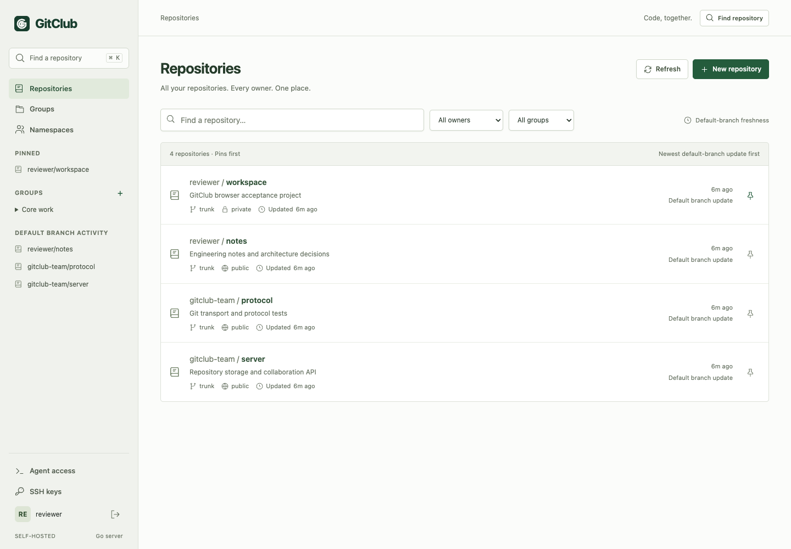

Rust passes the same GitClub MVP contract.
Rust's mixed HTTP p95 was 58.29 ms, versus 56.51 ms for Go and 438.74 ms for Gleam. Rust had the lowest sampled server RSS at 8.77 MiB. These are single runs of this fixture, not language-wide performance claims.
Same MVP. Independent backends. All three pass 20 acceptance groups, all 24 MCP tools, real SSH checks and authenticated restore. The shared interface keeps the developer workflow constant.
Dependency refresh, 2026-09-14: current builds use Go 1.27.1 and SQLite 3.53.4, with updated Rust crates. Performance and image-size measurements precede these changes and have not been rerun. Dependency audit and current validation.
Measured comparison
Lower is better in every row. Apple M5 Max, 128 GiB RAM. Native builds. Concurrency four. Rust was measured later using the same fixture; earlier Go/Gleam runs were retained.
| Measurement | Go | Gleam | Rust |
|---|
| Directory within mixed load, 40 repos, median | 2.22 ms | 276.39 ms | 3.99 ms |
|---|
| Repository directory, 1,000 repos, p95 | 49.53 ms | 594.05 ms | 84.24 ms |
|---|
| Mixed HTTP workload, p95 | 56.51 ms | 438.74 ms | 58.29 ms |
|---|
| Git clone, median | 147.58 ms | 230.95 ms | 145.92 ms |
|---|
| Git push, median | 240.22 ms | 310.85 ms | 251.13 ms |
|---|
| Sampled server RSS peak | 23.80 MiB | 73.86 MiB | 8.77 MiB |
|---|
| Sampled process-tree RSS peak | 71.36 MiB | 135.50 MiB | 55.75 MiB |
|---|
Inspect a measurement
Bars use a shared linear scale for the selected measurement.
What the numbers cover
400 requests across ten API operations and five clone/push rounds. The 40-repository fixture has one populated repository, 20 default-branch commits, 100 source files and a 1 MiB binary.
The 1,000-repository probe measures metadata navigation with 999 empty repositories. Its directory p95 has ten samples.
RSS is sampled, not an OS peak. Process-tree totals can double-count shared pages. These local results do not establish production uptime or compare GitHub/GitLab performance.
The repository workspace
Personal and organization repositories appear together. Pins come first; default-branch freshness orders each section. Shared groups preserve repository permissions.

Actual browser validation fixture. All three backends serve identical UI assets.
Go
2072 lines of application Go. One direct dependency. Standard-library HTTP, process control and streaming, with SQLite through CGO.
Gleam
3362 lines of application Gleam plus 396 Erlang lines containing OS primitives and embedded Python. Six direct dependencies. Mist HTTP and SQLite through a native driver.
Rust
3,279 lines of Rust application code and 16 direct dependencies. Axum/Tokio HTTP, per-request SQLite connections, bounded native Git processes, and typed mutation inputs. Read the implementation guide.
22 unit tests pass. Additional checks cover stream admission, header deadlines, active and startup shutdown, and recovery after a committed Git merge fails to record metadata.
Two findings changed the original implementations
- Go initially spawned Git for each empty or packed default ref. Bounded filesystem ref reads removed a 229 ms median directory bottleneck at 40 repositories.
- Gleam's distributed lock caused roughly 30-second request starvation. A bounded FIFO queue replaced randomized retries before the final measurements.
Exact displayed data